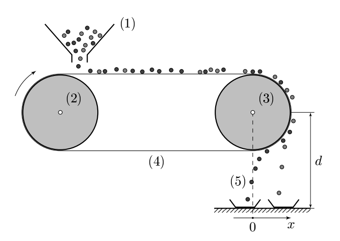

Y19 (2019) — English translation
The magnetic separation method is used to separate materials of different magnetic properties. For example, titanium ore deposits contain minerals such as zircon ($\rm ZrSiO_4$), monazite ($\rm \left[Ce{,}La{,}Th\right]PO_4$), ilmenite ($\rm FeTiO_3$), rutile ($\rm TiO_2$), among which the economic importance of titanium-containing minerals is difficult to overestimate. Rutile and ilmenite are used in the production of non-toxic pigments used in inks, plastics, ceramics and more. Therefore, rutile and ilmenite must be separated from titanium ores. Magnetic separation uses magnetic forces to separate magnetic materials. The operating principle of the magnetic separator is shown in Fig. 1.
Fig. 1: (1) box; (2) non-magnetic roller $L_1$; (3) magnetic roller $L_2$; (4) conveyor belt; (5) magnetic particles; (6) collection trays.

The main part of the magnetic separator consists of two rollers $L_1$ and $L_2$ (diameter $D$), connected by a conveyor belt (Fig. 1). The thickness of the tape compared to the radius of the rollers can be neglected. Roller $L_1$ is non-magnetic. The roller $L_2$ is magnetic, and the magnetic field around it changes according to the following law $$B(r)=\left|\vec{B}\right|=B_0e^{-r/a} $$где $r$ – расстояние от поверхности ролика в радиальном направлении, $a$ – некоторая константа. Магнитный ролик вращается с угловой скоростью $\omega$, которая поддерживается электромотор. Частицы минералов поступают из ящика на ленту конвейера, а по ней – к магнитному ролику. Трение между лентой и магнитным роликом достаточно велико, чтобы предотвратить проскальзывание между ними
Следующие математические формулы могут быть полезны: $$\coth{x}=\cfrac{e^x+e^{-x}}{e^x-e^{-x}}= \begin{cases} 1+e^{-2x}\quad\text{для}\quad x\to{\infty}\\ \cfrac{1}{x}+\cfrac{x}{3}-\cfrac{x^3}{45}\quad\text{для}\quad x\to{0} \end{cases}, $$$$e^x=\sum\limits_{n=0}^{\infty}\cfrac{x^n}{n!}\approx{1+\cfrac{x}{1!}+\cfrac{x^2}{2!}+\cfrac{x^3}{3!}+{...}} $$
In this part we will discuss the model of this magnetic separator, taking into account only magnetic and gravitational forces.
Let's study the properties of paramagnetic materials. Let us consider a mineral consisting of magnetic atoms $X$ with concentration $n$, each atom has a magnetic moment $p$. The concentration is low, so the interaction of the magnetic moments of atoms with each other can be neglected. In the absence of an external magnetic field, the magnetic moments of the atoms are directed randomly, resulting in the magnetization $\vec{M}$ being zero. The magnetization of a substance is the magnetic moment of a unit volume of a substance. In an external magnetic field, atoms are ordered along the direction of the external magnetic field $\vec{B}$, a magnetic moment appears in the material, and non-zero magnetization is obtained. According to quantum mechanics, the projection of the magnetic moment of an atom onto the field direction (we choose the $z$ axis along it) is equal to: $$p_z=g_j\mu_Bm $$где $m$ – число, принимает значения из множества $\{j,j-1,j-2,\dots,-j\}$ где $j$ – неотрицательное целое или полуцелое число, характеризующее атом $X$, $\mu_B=0{,}93\cdot{10^{-23}}~\text{A}\c dot{\text{m}^2}$ – магнетон Бора, и $g_j$ – так называемый фактор Ланде. Вероятность $W(p_z)$ проекции магнитного момента на направление магнитного поля принять значение $p_z⟦M1 5⟧$W(p_z)=Ae^{-\frac{U_B}{kT}} $$где $A$ – нормировочная константа, $U_B$ – энергия магнитного момента в магнитном поле, $T$ – температура, $k$ – постоянная Больцмана. Можно показать, что средние значения проекции магнитного момента на оси $x$ и $y$ are equal to zero.
Magnetic susceptibility $\chi$ characterizes the magnetic properties of a substance. In a weak magnetic field $\vec{B}$ the susceptibility is defined as $\chi=\frac{\mu_0M}{B}$, where $M$ magnetization, $\mu_0$ is the magnetic permeability of the vacuum. Consider the magnetic field weak, that is, the parameter $\alpha\ll{1}$.
Let's look at the model of magnetic separators described above. The dependence of the magnetic field induction $B$ at a point on the distance $r$ from this point to the surface of the magnetic roller along the radial direction is presented in the table:
$r,~\text{мм}$ $B,~\text{Тл}$ $r,~\text{мм}$ $B,~\text{Тл}$ $r,~\text{мм}$ $B,~\text{Тл}$ 1 0.606 5 0.098 9 0.024 2 0.415 6 0.070 10 0.014 3 0.262 7 0.045 11 0.008 4 0.144 8 0.030 12 0
Hereinafter, for calculations, use the following numerical values of the problem parameters:
$D=0.04~\text{м}$ $R_0=0.5 \cdot 10^{-3}~\text{м}$ $a=3.0 \cdot 10^{-3}~\text{м}$ $B_0=1.0~\text{Тл}$ $d=1.0~\text{м}$ $\omega_0=2\pi \cdot 240~\text{мин}^{-1}$ $\rho_1=5.0 \cdot 10^{3}~\text{кг}/\text{м}^3$ $\rho_2=4.3\cdot10^{3}~\text{кг}/\text{м}^3$ $\chi_1=6.3\cdot 10^{-4}$ $\chi_2=6.5\cdot 10^{-5}$ $\Delta=0.2~\text{м}$
Let us consider particles from one paramagnetic mineral with an average magnetic susceptibility $\chi_1$ and density $\rho_1$. Consider the particles to be spherical. Also consider that the magnetic moments of particles placed in the magnetic field of the roller are located at their center. The particle radius is $R_0$. The collection tray is located under the magnetic roller at a distance $d$ from it (Fig. 1). The angular velocity of the roller is $\omega_0$. The interaction between the magnetic moments of particles can be neglected. The magnetic force acting on the particles that left the roller can also be neglected. When the magnetic field induction changes by a small amount $dB$ the change in particle energy is written as $dE=-\vec{P} \cdot d\vec{B}$, where $\vec{P}$ is the magnetic moment of the particle.
Let us assume that the mineral particles are spheres of different radii. The relative deviation of the radius from the average does not exceed $10\%$, that is, $\left|\frac{R_0-R}{R_0}\right|\leq{0.1}$, where $R$ and $R_0$ are the radius of a particular particle and the average radius of all particles, respectively. Angular speed of the roller $\omega_0$.
A mixture of particles consisting of two different minerals with magnetic permeabilities $\chi_1$ and $\chi_2$ and densities $\rho_1$ and $\rho_2$, respectively. Consider the average particle radii of two different minerals to be $R_0$.
Source: https://pho.rs/p/3049